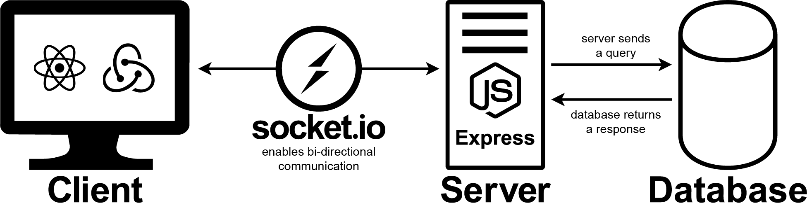

EVSE Dashboard
MeridaLabs (2019)

Summary
The EVSE Dashboard is an operational dashboard built to provide pertinent, important data that will allow parking garage managers to make more efficient decisions regarding their electric vehicle charging stations.
Links
Source is currently unavailable.
Links
Source is currently unavailable.
My Role
I worked as the main developer/designer for the project.
- Full stack programmer
- Created detailed, easy to maintain documentation.
- User research
- Product research
- Low fidelity to high fidelity prototyping
Tools Used
- React/Redux
- NodeJS
- Socket.io
- MySQL
- Sphinx
- Bitbucket, JIRA
Long Form Explanation
Background, Context
With more and more electric vehicles (EVs) being bought, and more parkades (Canadian for parking garage/lot) installing electric vehicle supply equipment (EVSE), otherwise known as EV charging stations, there is a need for parkade management to see the goings-on of the EV charging stations — an operational dashboard that would allow them to see how much energy they're using, how many chargers are being used at a given time, the amount of money they're making, and more.
User Research
Our main target demographic was parkade managers and admin staff. We had a line on one parkade manager, but with limited access to them. We did an informal, unstructured interview with a university parking manager and got a list of wants, needs, and pain points of the products he used.
Primary Stakeholders
Parkade Managers and Parkade Operational Staff who will be monitoring EV station usage levels are the primary stakeholders.
Product Research
To get a better understanding of the current product landscape, I took a look at competitor products and took note of what could be improved upon. The main takeaway was that there were improvements to be had in the level of complexity, and how quickly information could be accessed.
Creating Requirements
After doing some user research and product research, and understanding our constraints (i.e., what data was available to us), we created a list of requirements. Beyond the required default charts to display, we had some basic usability requirements. People needed to be able to view relevant data in a quickly and easily digestible manner. The default layout should be in an order where more consistently updated information is put in a position where it'd be viewed first.
Developing the Working Prototype

To develop a working prototype meant that I needed to design the front and back end systems. The front end was created using React and Redux, with Material UI and Recharts to speed up the visuals. Many custom components were required to be made, but having a foundation sped the process up considerably.
The back end was created using Node/Express as the main backbone. I wrote many SQL queries to interact with the database Socket.io was used to connect the two and implement real-time updating.
As with many modern software projects, we took an agile approach to the project. My coworker (who was working on another project) and I instituted a Bitbucket and JIRA combination for a significantly better issue/task tracking and workflow experience. Implementation for the most part was straightforward on the client-side.
Project Architecture
Documentation and project structure can often be overlooked in keeping a project maintainable. I carefully designed the project to have an understandable structure—with a balance of nesting folders and ease of access.
On the front end, components, utilities, and the store were put into appropriate folders. This was also done on the back end. Code was written and designed to be easily accessible and legible.
Documentation
I spent quite a bit of time documenting the project in a detailed manner.
I documented how to use the custom components that I created, what the various functions do, and the general structure of the project. Where applicable, I added accompanying diagrams — e.g a diagram explaining the component split between the navigation area, and the 'chart area'. I also explained the conceptual aspects of the project and included my thought processes for certain decisions, as well as the design patterns I used.
Accompanying documentation was created for the database side of the project, in which I explained the pertinent concepts, tables, keys, and issues of the (very large) database. I also documented the SQL queries that I wrote, explaining what each procedure does, how code blocks work and areas where I feel there could be some improvement in the future.
Challenges
Every project comes with some form of challenge. The EVSE Dashboard was no different.
1. An Undocumented Database
An undocumented database was the main source of issues. With a lack of documentation and a complex design, work on the project would have stagnated and many of the required features would not have been possible.
However a combination of reading the documentation, carefully analyzing the different fields and looking for patterns, communicating with my manager and the company managing the database, I ended up being able to:
- Create custom SQL queries for the project.
- Create documentation for the relevant parts of the database.
2. User Permissions
There were also access issues—our user accounts were not given full access to the database. This created issues for some of the real-time updating plans we initially set out to have. However, real-time updating was one of the main features of this project and so I figured out a way around this access issue and implemented it.
Learning New Technologies
Learning a new technology can be challenging, but also rewarding. During this project, I learned how to use web sockets, and I learned the associated design patterns with web sockets.